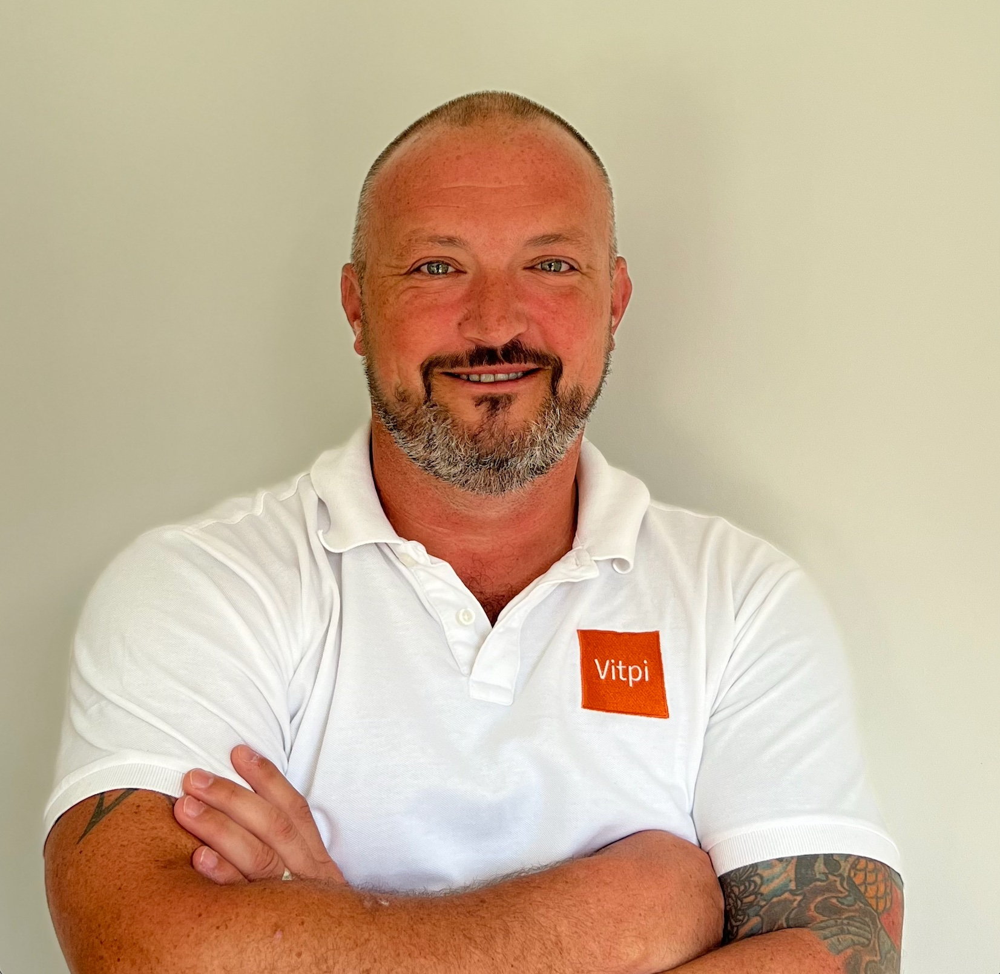

About
Wealth Manager · Entrepreneur · Founder
|
 |
THE STORY 28 years of doing this properly.I started in financial services nearly three decades ago with a simple belief: that independent, unconflicted advice — delivered by someone who genuinely understands your life — produces better outcomes than anything a large institution can offer. Vitpi grew from that belief — becoming the home for everything I do in wealth management, passive income architecture, portfolio strategy and pension planning. I'm based in Dubai, working with clients across the Middle East, UK and internationally. Most are HNW individuals, expats and entrepreneurs whose financial lives don't fit a standard template. "The wealth I've built for clients has always been the means to an end — the freedom to live the life they actually want." |
Career timeline
Beyond Vitpi
The businesses I've built outside Vitpi aren't a distraction — they're an extension of the same philosophy: deploy resources into things that genuinely matter.
East Africa's first integrated rPET recycling business. We collect post-consumer plastic bottles across Tanzania and process them into food-grade recycled pellets and yarn — creating jobs, reducing plastic waste and building a circular economy that works commercially.
Visit mlimaloop.com →An ethical Kilimanjaro climbing company built on the principle that great expeditions should be great for everyone involved — the climbers, the guides, the local community and the mountain itself. Co-founded with head guide Zidane Juma, who has summited over 300 times.
Visit verticalsky.com →Start with a conversation. No obligation, no pitch.
Get in touch